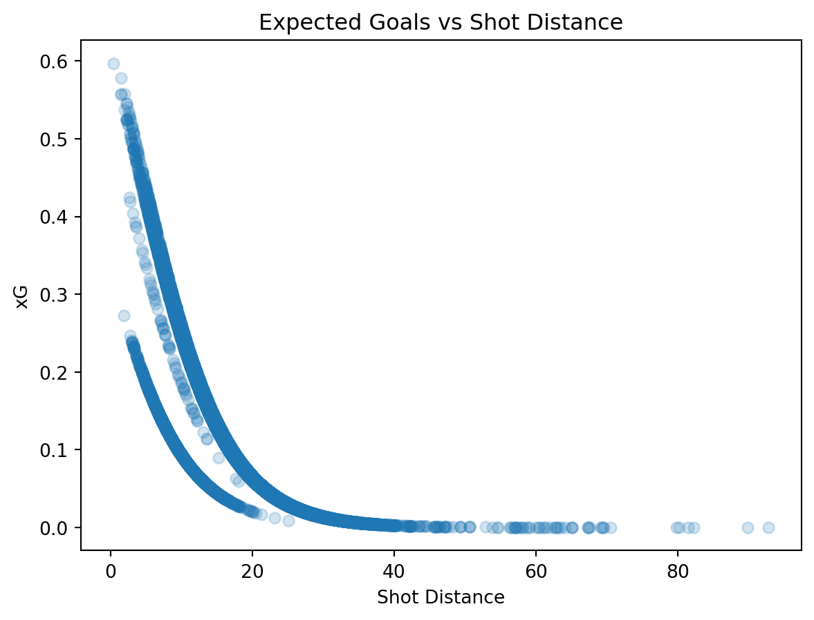

In modern sports analytics, many of the traditional statistics used do not provide a full understanding of performance of players and teams. Soccer is a low scoring game, so this problem is especially heightened since outcomes can be highly influenced by randomness instead of skill. Because of this, analysts created a metric called expected goals (xG) that provides each shot with a probability of resulting in a goal that is based on different factors such as angle, distance from the goal, body part used to make the shot, and defensive pressure. xG is a great metric, but it isn’t without its faults.
This article, “Separating Chance Quality and Player Ability in xG,” written by Alex Felices, focuses on how the xG metric can be improved when analyzing soccer players and teams. The main thesis is that traditional xG models do not distinguish between the quality of a scoring opportunity and the skill of the player taking the shot. This can lead to a misinterpretation of a player or team’s skill. The article aims to determine whether players who consistently exceed their xG are truly better finishers or whether existing models are missing important contextual factors.
To address this concern, the article reviews a study that developed its own xG model using event stream data, which is data that contains a sequential track of every move on the ball during a match such as passes, shots, fouls, dribbles, etc. along with additional contextual measures. Felices begins with an explanation of how crucial the xG metric has become to performance analysis, recruitment, and betting with soccer. The author wants to create a new xG model that is more reliable for predicting the likelihood of a shot being a goal and make it similar to industry models.
The model focuses only on open play shots, which are shots that are taken during live gameplay rather than from a corner kick, free kick, or penalty. The model uses a dataset of over 15,000 shots from La Liga. Initially, 95 variables were considered, which were later reduced to a smaller set of important features, including spatial data, contextual information (such as defender and goalkeeper positioning), and shot characteristics. The model began with a logistic regression baseline, which performed poorly by underpredicting high quality chances of a goal. After adding more variables, the model’s accuracy was greatly improved. The final model using machine learning along with additional variables enhanced performance and gave results that matched closely with real world outcomes.
The author then introduces position adjusted and player adjusted xG models. After analyzing forwards, midfielders, and defenders, it was found that forwards were the most efficient finishers compared to midfielders and defenders and this increased xG. This model proves that the ability to finish varies significantly by position. Next, Lionel Messi was used as a case study for the player adjusted model since he tends to exceed his predicted goals. When the Messi adjusted model was applied to all players, the total xG increased significantly. This means that individual players have a measurable difference in finishing ability and it can vary significantly by player.
By determining that both individual player and position can impact xG, the author concludes that the traditional xG metric is limited since it does not account for player skill or position and having that additional context improves accuracy. This adjusted xG model allows for a more accurate prediction of performance.
The key metric in this article is xG (expected goals), along with the article’s addition of the player and position adjusted xG models. Expected goals is a statistic that assigns each shot a value between 0 and 1, where 0 means the shot had almost no chance of becoming a goal and 1 would mean the shot was almost certain to become a goal. For example, a shot from far outside the box might have an xG of 0.03, which means shots like that are scored about 3% of the time, while a closer shot right in front of an open goal might have an xG of 0.80.
The first step of calculating xG is to build a dataset of past shots where each row in the dataset represents one shot, and the response variable shows whether the shot became a goal (0 for no goal, 1 for a goal). The dataset also includes predictors that describe the shot. In the model used in the article, these variables are factors such as the distance from goal, the angle to goal, the body part used, goalkeeper position, defender pressure, and other contextual aspects.
After the dataset is built, most of the time, a logistic regression model is used to fit a probability of scoring since the outcome is binary (0 or 1). The logistic regression model is
where each \(x_i\) represents an attribute of the shot (distance, angle, etc.) and each \(\beta_i\) is a coefficient estimated from the data.
The total expected goals is calculated as:
\[
\text{Total xG} = \sum_{i=1}^{n} xG_i
\] For example, if a shot has its corresponding values plugged into the model and gives an output of \(P(\text{goal}) = 0.11\), this means the shot has an 11% chance of being scored based on historic shots with similar statistics.
This article improves this model by adding more detailed contextual features since the basic model may miss important details. Also, the player and position adjusted xG models were created to expand further. The model in the article is no longer a basic xG model that only estimates the probability that an average player would score the shot. It now can estimate the probability that a specific player with a certain position will score.
To show how the xG metric works in practice, I made a simpler version of an expected goals model. Since I did not have access to the same API that the article used, I used a smaller CSV with less columns. The article explains how xG is built using logistic regression and shot level data, so I used a dataset where each row is a single shot. For my simpler model, I used shot distance and body part as predictors, and the predicted probability represents the xG for each shot.
# Import datasetimport pandas as pdshot_data = pd.read_csv("soccer_shots_distance.csv")shot_data.head()
match_id
shot_outcome
shot_type
shot_body_part
distance
competition_name
season_name
source_file
0
18242
Off T
Open Play
Right Foot
20.000000
Champions League
2014/2015
Champions_League_2014-2015_shots.csv
1
18242
Wayward
Open Play
Head
12.369317
Champions League
2014/2015
Champions_League_2014-2015_shots.csv
2
18242
Goal
Open Play
Left Foot
8.246211
Champions League
2014/2015
Champions_League_2014-2015_shots.csv
3
18242
Off T
Open Play
Right Foot
22.472205
Champions League
2014/2015
Champions_League_2014-2015_shots.csv
4
18242
Off T
Open Play
Right Foot
19.313208
Champions League
2014/2015
Champions_League_2014-2015_shots.csv
# Create the goal binary variable shot_data["goal"] = (shot_data["shot_outcome"] =="Goal").astype(int)# Clean the datashot_data = shot_data[["goal", "distance", "shot_body_part", "shot_type"]].dropna()# Use only open play shots like the article shot_data = shot_data[shot_data["shot_type"] =="Open Play"]
Optimization terminated successfully.
Current function value: 0.293346
Iterations 7
Actual Goals Expected Goals
0 1439 1439.0
import matplotlib.pyplot as pltplt.scatter(shot_data["distance"], shot_data["xG"], alpha=0.2)plt.xlabel("Shot Distance")plt.ylabel("xG")plt.title("Expected Goals vs Shot Distance")plt.show()

The output of the model and the graph suggest that the probability of scoring decreases as the distance of a shot increases. The main idea of xG is that closer shots are generally more likely to lead to a goal, and my outcome stays consistent with that. The total expected goals matches the total observed goals because the model was trained and evaluated on the same dataset. Overall, this simplified model shows how xG gives a probability to each shot rather than evaluating performance using only goals.
One of the main strengths of the xG metric is that it is a more accurate measure of performance instead of just shooting percentage. It does take into account that goals are not the only thing that can determine the quality of a player or team. A player could score a lot of goals, but only take the easiest shots. The xG model in general measures the likelihood of a shot becoming a goal, which helps to separate luck from skill. Since soccer is such a low scoring sport, outcomes can be heavily impacted by randomness. With the xG model, analysts can see if a player is over or under performing based on the quality of their chances at a goal, which is helpful for predicting future success because players who are constantly getting high xG are more likely to continue scoring in the future.
In the article, the xG used is an improvement from traditional xG metrics because it adds more contextual variables for higher accuracy. The model from the article adds variables such as defensive pressure and goalkeeper position. With more variables included, the article’s xG model is able to better simulate real world games and situations. The article also looks at player and position adjusted xG metrics. These adjustments account for differing players and positions rather than assuming everything is the same.
Even though the xG metric has improved significantly, it still has its limitations. One negative feature about this metric is that a high quality and complete dataset is needed in order to use it. It can be difficult to capture every variable that can influence a shot, even with the additional variables, so some outcomes can still be inaccurate. Also, the article mentions using more complex machine learning methods to improve the model. This would be good for accuracy, but can make it more difficult to understand exactly how each variable individually impacts the outcome.
Another limitation to the xG metric is that finishing ability is inconsistent and can be difficult to measure in some circumstances. In the real world, players can go through periods of underperforming or overperforming due to external factors which can make it difficult to determine if a player’s performance truly depends on skill or randomness. The model could overestimate differences in finishing ability and blame outcomes on lack of skill when it really could be randomness.
The improved xG metric directly supports the author’s main argument by showing that traditional xG models may not fully represent player skill level. The author’s thesis is that the traditional xG metric combines skill and chance, which can lead to incorrect conclusions. From introducing more variables and position and player adjustments, the new metric separates skill and chance and proves that the player and position differences make an impact on the outcome. From the example in the article, forwards tend to outperform xG and Lionel Messi also consistently exceeds his xG over time. This supports the claim that some players are just better finishers on average rather than just having better chances at scoring.
There are still some concerns with using the xG metric to support the argument because the player adjusted model mostly relies on historical data and can be incorrect if the player is on a bad playing streak or just does not have a good amount of data. The model also consistently assumes that the differences between actual and expected goals is solely due to player skill level. This is not always true because there could still be some variation caused by randomness. Due to these limitations, the improved xG metric does not fully prove that luck and skill can completely be separated when determining scoring ability.
The article mentions using machine learning methods and logistic regression to improve the xG model. Logistic regression is the main method used for predictions. Using a logistic regression model is appropriate because it allows the outcome to be binary (Goal = 1, No Goal = 0) and is easy to interpret probabilities. The article then takes the model to the next level by appropriately incorporating machine learning methods for improvements. Using machine learning methods shows the limitations of a basic model and the benefits of a more advanced model. There are no other main metrics mentioned other than the xG model, which is the main focus of the article.
Overall, the article shows that even though expected goals (xG) is a beneficial metric for determining player skill level in soccer, there are still some limitations to it that need to be considered during analysis. The author found from looking at players and positions individually, the traditional xG metric can misinterpret skill level and treat players as if they all have the same finishing ability. After using higher level methods to make an improved model, the analysis recognizes that no model can fully capture every aspect of the game and make a completely accurate prediction. However, the xG metric is a more complete and detailed way of analyzing player performance and is a valuable tool in soccer analytics.
Works Cited
Felices, Alex Marin. “Separating Chance Quality and Player Ability in xG.” The xG Football Club, 28 Jan. 2026.
AI Usage Statement
I used AI to understand how to handle categorical variables in logistic regression and to assist with formatting my essay in Quarto.